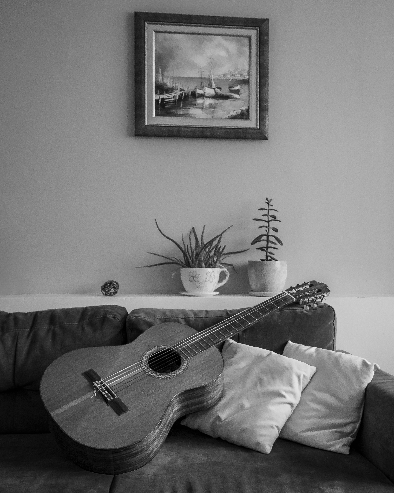

Clases de Guitarra Acústica
La guitarra acústica es uno de los instrumentos más populares, portátiles y accesibles del mundo. Su estudio desarrolla la motricidad fina, la coordinación, el sentido del ritmo y la comprensión armónica, permitiendo interpretar y acompañar una inmensa variedad de géneros como pop, rock, folk, baladas y música tradicional.
En el Centro de Artes Musicales las clases son individuales y completamente personalizadas, adaptándose a la edad, experiencia y objetivos de cada alumno. Se imparten en vivo a través de Zoom o Google Meet, y llevamos una bitácora de trabajo que actualizamos clase con clase para monitorear detalladamente el progreso del estudiante.
El curso tiene un costo de $600 MXN mensuales, e incluye 4 clases de una hora (una por semana).
Metodologías de reconocimiento internacional:
- ABRSM: Una de las instituciones musicales más prestigiosas del mundo. Su programa está organizado en ocho niveles progresivos (Grades 1 al 8) y desarrolla de manera integral la interpretación, la teoría musical, el entrenamiento auditivo y la lectura musical.
- Rockschool: Sistema internacional especializado en música moderna, reconocido por sus programas de evaluación y certificación en estilos como rock, pop, jazz, funk y otros géneros contemporáneos.